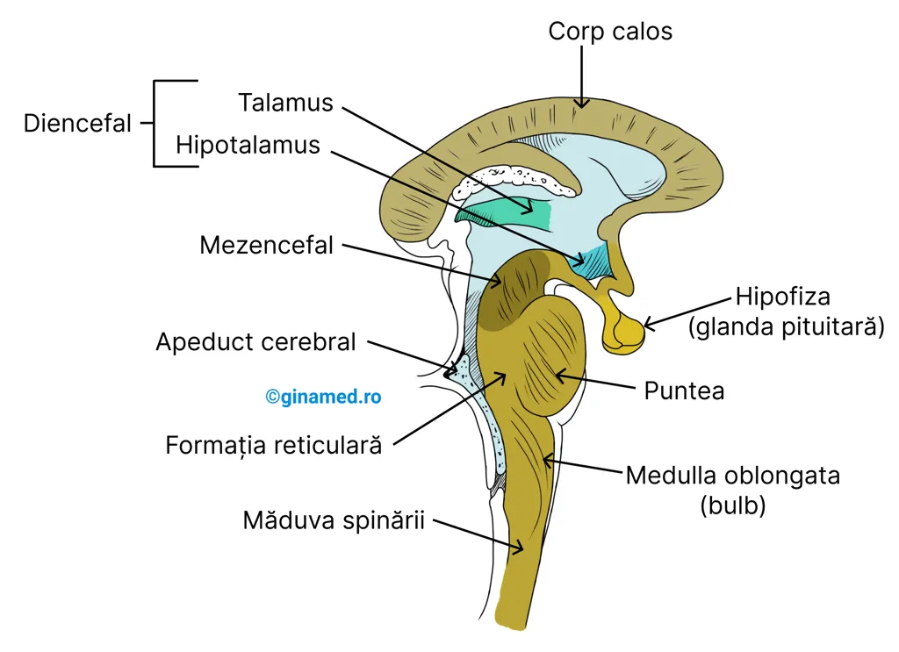

Lunar
49 lei / lună
Pas cu pas, lună de lună.
- Toate cele 17 lecții
- Grile și explicații pe variante
- Notițe personale
- Progres sincronizat în cont
Fără plată. Fără card.
Pregătirea pentru UMF Cluj, cu loc pentru înțelegere.
Lecții clare, grile explicate și pași mici, în fiecare zi.
Mai multe puncte de pornire
O lecție. O întrebare. Momentul în care se leagă.
Derulează sau alege un pas.

Țesutul nervos care conectează emisferele cerebrale cu măduva spinării conține un număr de structuri cunoscute sub numele colectiv de trunchi cerebral. Acestea sunt mezencefalul, puntea și bulbul rahidian (medulla oblongata).
O întrebare din materie, cu explicații pentru fiecare variantă. Ia-ți timpul de care ai nevoie.
Exercițiul de prezentare nu se salvează în progresul tău.
Aceeași experiență de studiu.
Alege perioada care ți se potrivește.
Prețuri demonstrative.
Abonamentele nu se pot cumpăra încă.
49 lei / lună
Pas cu pas, lună de lună.
Fără plată. Fără card.
490 lei / an
Mai mult timp pentru drumul tău.
Fără plată. Fără card.
Trei gânduri ilustrative pentru această prezentare.
„Să pot vedea textul lângă figură. Așa mi-ar fi mai ușor să pun informațiile cap la cap.”
„Nu doar un răspuns bifat. Aș vrea să înțeleg și de ce celelalte variante nu se potrivesc.”
„Un loc pentru ideile mele, la care să mă pot întoarce când reiau lecția.”
Da. Poți citi lecțiile și rezolva grile fără cont. Pentru notițe și sincronizarea progresului între dispozitive, creează un cont BioMed.
Grila de pe această pagină este doar pentru încercare. Răspunsurile ei nu se salvează în progresul tău.
Nu încă. Tarifele afișate sunt exemple pentru prezentare. Nu se efectuează plăți, iar accesul actual la lecții rămâne disponibil.
Varianta clasică este în continuare disponibilă, cu aceleași lecții, grile și conturi.
Materia, întrebările și ideile tale.
Ne vedem la prima lecție.